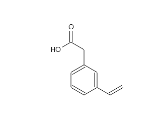
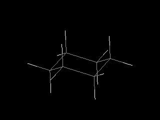
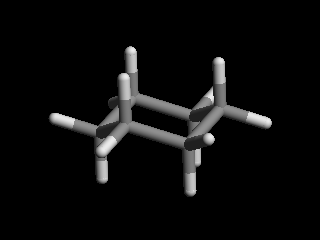
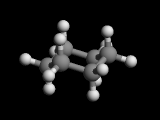
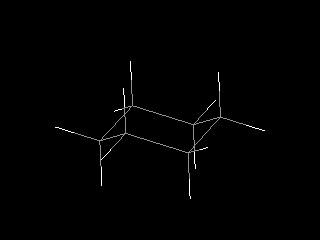
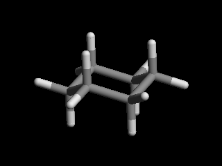
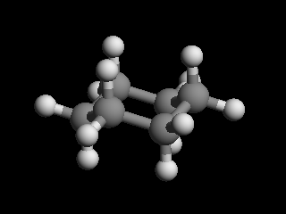

Chem Viewer Widget
Chem viewer is one of the most important widget in Kekule.js toolkit. It provides the ability to easily display molecule and other chemistry objects. User can interacts with displayed objects directly with mouse or touch or through an optional toolbar.
< Chem Viewer UI in 2D mode, displaying a reaction >
< Chem Viewer UI in 3D mode, displaying a molecule model >
Developers are able to customize many features of the widget by a series of properties:
Property |
Type |
Description |
|---|---|---|
chemObj |
object |
Gets or sets displayed chem object in viewer. |
renderType |
int |
Set to |
moleculeDisplayType |
int |
Type of molecule model, can be set to the following value:
|
autoSize |
bool |
Whether the widget change its size to fit the dimension of chem object inside. Only available in 2D mode. |
autofit |
bool |
Whether the chem object inside viewer fulfill all space of the widget. Only available in 2D mode. |
backgroundColor |
string |
Background color of viewer, in form of CSS color format (e.g. ‘#ffffff’, ‘transparent’). |
zoom |
float |
Zoom ratio to draw chem object. For example, 1.5 will lead to draw chem object 150% large. |
caption |
string |
Text caption of viewer. |
showCaption |
bool |
Whether the caption is displayed. |
enableDirectInteraction |
bool |
If true, using mouse or touch can zoom, rotate or move chem object inside. |
enableEdit |
bool |
If true, an editor may be launched to edit chem object inside the viewer. |
enableToolbar |
bool |
Whether a toolbar is displayed in viewer to perform some useful functions. |
toolButtons |
array |
Array of button names, determines the buttons shown in toolbar. |
resizable |
bool |
Set true to add a grip to enable user resize the viewer. |
Creating Viewer
The following JavaScript creates a simple chem viewer, appends it to an HTML element, and display a molecule in it:
var chemViewer = new Kekule.ChemWidget.Viewer(document);
chemViewer.setDimension('500px', '400px');
chemViewer.appendToElem(document.getElementById('parent')).setChemObj(molecule);
It is also possible to create viewer widget on an existing element:
var chemViewer = new Kekule.ChemWidget.Viewer(document.getElementById('div1'));
The viewer can also be initialized by HTML binding:1
<div id="chemViewer" style="width:500px;height:400px" data-widget="Kekule.ChemWidget.Viewer" data-chem-obj="url(#molecule)"></div>
Note the chemObj property is set by data-chem-obj attribute in the HTML code above,
thus molecule from that resource
("url(#molecule)") will be loaded automatically into viewer.
Setting and Retrieving Object in Viewer
User can get or set object in viewer by property chemObj:1
// set new object in viewer
var cmlData = '<cml xmlns="http://www.xml-cml.org/schema"><molecule id="m1"><atomArray><atom id="a2" elementType="C" x2="7.493264658965051" y2="35.58088907877604"/><atom id="a3" elementType="O" x2="8.186084981992602" y2="35.18088907877604"/><atom id="a1" elementType="C" x2="6.800444335937501" y2="35.18088907877604"/></atomArray><bondArray><bond id="b2" order="S" atomRefs2="a2 a3"/><bond id="b1" order="S" atomRefs2="a2 a1"/></bondArray></molecule></cml>';
var myMolecule = Kekule.IO.loadFormatData(cmlData, 'cml');
chemViewer.setChemObj(myMolecule);
// get object in viewer
var molecule = chemViewer.getChemObj();
// and save molecule in CML
var cmlData = Kekule.IO.saveFormatData(obj, 'cml');
console.log(cmlData);
Changing Display Type of Viewer
The viewer provides several types to display a molecule. Skeletal and condensed model in 2D mode, and wire, sticks, ball stick and space fill model in 3D mode are currently supported.
 






The following code demonstrates switching 2D/3D or different models to display molecule:1
// display 2D molecule in skeletal model
chemViewer.setRenderType(Kekule.Render.RendererType.R2D);
chemViewer.setMoleculeDisplayType(Kekule.Render.Molecule2DDisplayType.SKELETAL);
// display 3D molecule in space fill model
chemViewer.setRenderType(Kekule.Render.RendererType.R3D);
chemViewer.setMoleculeDisplayType(Kekule.Render.Molecule3DDisplayType.SPACE_FILL);
The displaying model can also be changed by tool button in viewer.
Changing Zoom Level and Rotation of Object
The zoom level and rotation angle of object can be changed in the following code:1
// 2D mode
chemViewer.setRenderType(Kekule.Render.RendererType.R2D);
chemViewer.setZoom(2); // zoom to 200%
chemViewer.rotate2DBy(Math.PI / 2); // rotate by 90 degree
// 3D mode
chemViewer.setRenderType(Kekule.Render.RendererType.R3D);
chemViewer.setZoom(1.5); // zoom to 150%
var dx = Math.PI / 2, dy = Math.PI /3, dz = Math.PI / 4;
// rotate object by 90, 60 and 45 degrees on X/Y/Z axis
getChemViewer().rotate3DBy(dx, dy, dz);
Changing the Default Render Color
By default, the viewer widget renders chemical object with color configured in renderConfigs property of viewer:1
// 2D Viewer
var color2DConfigs = chemViewer.getRenderConfigs().getColorConfigs();
color2DConfigs.setAtomColor('#A00000').setBondColor('#A0A000'); // set the default color for atoms and bonds
color2DConfigs.setGlyphStrokeColor('#C0C0C0'); // default color of glyph stroke, e.g. the arrows
color2DConfigs.setLabelColor('#C0C0C0'); // default color of text labels
chemViewer.requestRepaint(); // repaint
// 3D Viewer
var display3DConfigs = chemViewer.getRenderConfigs().getMoleculeDisplayConfigs();
display3DConfigs.setDefAtomColor('#000099').setDefBondColor('#FFFFFF');
display3DConfigs.setUseAtomSpecifiedColor(false); // turn off this to take the color to effect
chemViewer.requestRepaint(); // repaint
Besides the JavaScript code above, custom CSS properties can also be used here to control the render options (including color and others):
#chemViewer
{
--atom-color:#A00000;
--bond-color:#A0A000;
/* render options other than color */
--bond-line-width:4;
--font-size:20
/* Note the bond width and font size are simply numbers without units */
}
Some times, user may want to the embedded viewer widget in a paragraph like a inline image. In that case, the render color of viewer is better for following the color of the paragraph. For that purpose, you can set the inheritedRenderColor property to true:
chemViewer.setInheritedRenderColor(true);
or in the HTML code:
<div id="chemViewer" data-widget="Kekule.ChemWidget.Viewer" data-chem-obj="url(#molecule)" data-inherited-render-color="true"></div>
Note
The approaches introduced above can actually be applied to Composer widget too, although not so useful as to Viewer widget.
Customizing Toolbar
The toolbar can be enabled or removed by setting the enableToolbar property:1
chemViewer.setEnableToolbar(true); // enable the toolbar
chemViewer.setEnableToolbar(false); // disable and hide the toolbar
The toolbar is automatically displayed and hidden with certain interactions of user. For example, the following code will let toolbar be shown when user move mouse inside or click/touch in viewer and hidden when mouse leave the viewer or after a period of time (timeout):1
chemViewer.setToolbarEvokeModes([
Kekule.Widget.EvokeMode.EVOKEE_CLICK,
Kekule.Widget.EvokeMode.EVOKEE_MOUSE_ENTER,
Kekule.Widget.EvokeMode.EVOKEE_TOUCH
]);
chemViewer.setToolbarRevokeModes([
Kekule.Widget.EvokeMode.EVOKEE_MOUSE_LEAVE,
Kekule.Widget.EvokeMode.EVOKER_TIMEOUT
]);
The position of toolbar can be set by toolbarPos property:
// Move toolbar to top left corner of viewer
chemViewer.setToolbarPos(Kekule.Widget.Position.TOP_LEFT);
// Move toolbar to bottom and outside the viewer
chemViewer.setToolbarPos(Kekule.Widget.Position.BOTTOM);
chemViewer.setToolbarMarginVertical(-10); // 10px outside viewer
Buttons in the toolbar are also customizable by toolButtons property. It is an array
that contains all visible button names. The name and function of each tool buttons are
listed in the following table:
Button |
Name |
Description |
|---|---|---|
|
loadData |
Load external data file to viewer. |
|
saveData |
Save object inside viewer to file. |
|
clearObjs |
Clear object in viewer. |
|
molDisplayType |
Molecule display model. |
molHideHydrogens |
Show or hide hydrogen atoms. Only available in 3D mode. |
|
|
zoomIn |
Zoom in object. |
|
zoomOut |
Zoom out object. |
|
rotateLeft |
Rotate object in anti-clockwise direction. Only available in 2D mode. |
|
rotateRight |
Rotate object in clockwise direction. Only available in 2D mode. |
|
rotateX |
Rotate object around X-axis. Only available in 3D mode. |
|
rotateY |
Rotate object around Z-axis. Only available in 3D mode. |
|
rotateZ |
Rotate object around Z-axis. Only available in 3D mode. |
|
reset |
Reset zoom level to 1 and rotation angle to 0. |
|
openEditor |
Open an editor to modify the object inside viewer. |
|
config |
Change the configurations of viewer. |


The following code will show only saveData, zoomIn and zoomOut buttons in toolbar:1
chemViewer.setToolButtons(['saveData', 'zoomIn', 'zoomOut']);
Other buttons can also be inserted into the toolbar. For example, the following codes will add a new custom button with caption while clicking on it shows a alert dialog:1
chemViewer.setToolButtons([
'saveData', 'zoomIn', 'zoomOut'
{
'text': 'Custom', // button caption
'htmlClass': 'K-Res-Button-YesOk', // show a OK icon
'showText': true, // display caption of button
'#execute': function(){ alert('Custom button'); } // event handler when executing the button
}
]);
Presets
Some typical presets of viewer are also provided as a shortcut of setting varies of properties.
Change to a preset by method setPredefinedSetting:1
// change to preset fullFunc
chemViewer.setPredefinedSetting('fullFunc');
- ‘fullFunc’
Interactive viewer, toolbar with most buttons. Equals to:
chemViewer
.setEnableToolbar(true)
.setEnableDirectInteraction(true)
.setEnableEdit(true)
.setToolButtons([
'loadData', 'saveData', 'molDisplayType', 'molHideHydrogens',
'zoomIn', 'zoomOut',
'rotateLeft', 'rotateRight', 'rotateX', 'rotateY', 'rotateZ',
'reset', 'openEditor', 'config'
]);

- ‘basic’
Interactive viewer, toolbar with basic buttons. Equals to:
chemViewer
.setEnableToolbar(true)
.setEnableDirectInteraction(true)
.setEnableEdit(false)
.setToolButtons(['saveData', 'molDisplayType', 'zoomIn', 'zoomOut']);

- ‘editOnly’:
Interactive viewer, toolbar shows only edit button. Equals to:
chemViewer
.setEnableToolbar(true)
.setEnableDirectInteraction(true)
.setEnableEdit(true)
.setToolButtons(['openEditor']);
- ‘static’
Static viewer, disabling interactivity and hide the toolbar. Usually used as a replacement of traditional HTML
<img>tag. Equals to:
chemViewer
.setEnableToolbar(false)
.setEnableDirectInteraction(false)
.setEnableEdit(false)
.setToolButtons([]);
Of course, developer can add their own presets:
Kekule.ObjPropSettingManager.register('Kekule.ChemWidget.Viewer.customPreset',{
enableToolbar: true,
enableDirectInteraction: false,
toolButtons: ['loadData', 'saveData', 'molDisplayType', 'openEditor']
});
- 1(1,2,3,4,5,6,7,8,9,10)
Example of this chapter can be found and run at here. Some Kekule.js demos (Chem Viewer 2D, Chem Viewer 3D, Embedded Chem Object and Molecule Viewer ) may also be helpful.